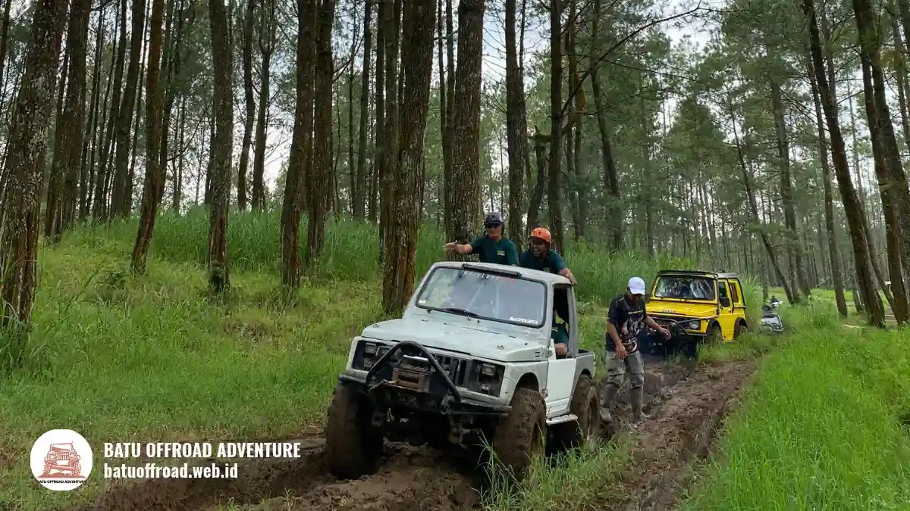

Paket Land Rover Offroad 4x4 Coban Putri Batu
Land Rover offroad Coban Putri Batu adalah wisata jelajah jalur alam dengan jeep 4x4 yang dipandu driver berpengalaman, cocok untuk keluarga, kantor, sekolah, dan komunitas.
Ingin langsung cek jadwal? Hubungi tim Batu Offroad via WhatsApp +62 812-3398-9707 untuk booking.
- Wisata ini memakai jeep 4x4 dan Land Rover yang dikemudikan driver berpengalaman, lengkap dengan guide dan peralatan keamanan.
- Rombongan minimal 10 orang, dan operator menyarankan reservasi 1-2 minggu sebelum tanggal kegiatan.
- Aktivitas dapat digabung dengan fun games atau team building bagi kelompok yang ingin acara lebih terstruktur.
- Tim Batu Offroad siap membantu memilih kegiatan yang pas melalui WhatsApp +62 812-3398-9707.
Apa saja yang didapat dalam wisata Land Rover offroad di Coban Putri?
Peserta umumnya mendapat armada jeep 4x4, driver berpengalaman, guide, peralatan keamanan, dan tiket rute offroad, dengan tambahan sesi permainan bila memilih paket gabungan.
Batu Offroad Adventure menyebut paketnya lengkap dengan guide, peralatan keamanan, dan armada yang disiapkan untuk kegiatan luar ruang. Di situsnya, operator mencatat lebih dari 180 event yang telah ditangani dan setidaknya 3 rute offroad.
Angka ini adalah klaim operator, sehingga wajar jika calon pemesan menanyakan pengalaman tim untuk jenis rombongan yang sama dengan kelompoknya.
Isi paket dapat berbeda tergantung pilihan. Paket Offroad + Fun Games, misalnya, memuat sesi fun games dan peralatannya, sedangkan paket Offroad + Team Building menambahkan instruktur dan peralatan outbound.
Konfirmasikan hal-hal seperti makan, dokumentasi, dan shuttle pada saat pemesanan karena item tersebut dapat bervariasi.
Siapa yang cocok mengikuti Land Rover offroad Coban Putri Batu?
Wisata ini cocok untuk keluarga, kantor, sekolah, kampus, dan komunitas yang ingin petualangan alam dengan pendampingan guide, selama kondisi kesehatan peserta memungkinkan.
Beberapa contoh kelompok yang sering menggunakannya:
- Kantor dan instansi yang menyelenggarakan gathering atau apresiasi tim.
- Sekolah dan kampus untuk kegiatan angkatan atau perpisahan.
- Komunitas seperti klub hobi atau alumni.
- Keluarga besar yang berlibur bersama anak dan orang tua.
Offroad wisata berbeda dari offroad ekstrem. Jalur disesuaikan agar rombongan umum dapat menikmatinya, tetapi guncangan, debu, dan percikan lumpur tetap bagian dari pengalaman.
Peserta dengan masalah punggung, leher, jantung, atau sedang hamil sebaiknya berkonsultasi lebih dulu. Untuk keluarga dengan anak, tanyakan kebijakan batas usia kepada operator sebelum memesan.
Bagaimana alur perjalanan Land Rover offroad dari datang sampai pulang?
Alurnya dimulai dari kedatangan di basecamp, pembagian jeep, briefing keselamatan, jelajah jalur alam dengan titik singgah, lalu kembali ke basecamp untuk istirahat dan foto bersama.
Urutan umumnya sebagai berikut:
- Kedatangan dan registrasi: Rombongan tiba di basecamp, parkir, dan berkumpul di area pendopo.
- Pembagian jeep: Peserta dibagi ke armada sesuai jumlah orang.
- Briefing keselamatan: Guide menjelaskan posisi duduk, cara berpegangan, dan hal yang dilarang selama perjalanan.
- Jelajah jalur: Konvoi jeep menyusuri jalur alam dengan beberapa titik singgah untuk foto.
- Kembali ke basecamp: Peserta beristirahat, makan di kantin, dan melanjutkan sesi lain bila ada.
Panjang jalur dapat dipilih dalam kategori Short Trip, Medium Trip, atau Long Trip. Rute pendek lebih cocok bagi rombongan yang belum biasa, sementara rute panjang disarankan bagi yang ingin pengalaman lebih menantang.
Untuk gambaran akses menuju lokasi, tersedia rute ke Coban Putri dari Alun-alun Batu, bandara, dan stasiun Malang.
Ingin memastikan jalur dan jadwal yang pas untuk rombongan Anda? Kirim tanggal dan jumlah peserta ke WhatsApp +62 812-3398-9707, dan tim Batu Offroad akan membantu memilihkan kegiatan yang sesuai.

Jalur alam offroad Coban Putri Batu dilalui jeep 4x4.
Seberapa aman offroad Land Rover untuk rombongan?
Keamanan bergantung pada armada yang terawat, driver dan guide berpengalaman, briefing yang jelas, serta kepatuhan peserta. Tidak ada kegiatan outdoor yang bebas risiko sepenuhnya.
Operator mencantumkan standar keselamatan, driver dan crew berpengalaman, serta peralatan keamanan pada situsnya. Walau demikian, calon pemesan sebaiknya mengajukan pertanyaan sendiri sebelum memesan:
- Apakah armada diperiksa sebelum berangkat?
- Siapa yang mendampingi tiap konvoi?
- Bagaimana kebijakan bila cuaca memburuk?
- Apa aturan duduk dan berpegangan di jeep?
Aturan dasar yang berlaku bagi peserta umumnya mencakup duduk sesuai arahan, tidak berdiri saat jeep melaju, tidak menjulurkan tangan atau kaki ke luar, serta mengikuti instruksi guide. Penjelasan lebih lengkap tersedia dalam artikel standar keselamatan offroad di Batu.
Apa yang perlu dipersiapkan peserta sebelum offroad?
Peserta perlu memakai pakaian berlapis, alas kaki antiselip, perlindungan dari debu, dan membawa baju ganti, air minum, serta perlengkapan pribadi yang tidak mudah rusak.
Daftar sederhana yang bisa dibagikan panitia:
- Kaus atau jaket yang mudah dicuci, karena percikan lumpur mungkin terjadi.
- Sepatu atau sandal gunung yang tertutup dan tidak licin.
- Masker atau buff untuk mengurangi debu.
- Kacamata atau topi sesuai kebutuhan.
- Baju ganti dan kantong plastik untuk pakaian kotor.
- Obat pribadi bagi yang membutuhkan.
- Ponsel yang disimpan aman atau dilengkapi pelindung.
Operator menyediakan peralatan keamanan, sehingga peserta tidak perlu membawa perlengkapan khusus. Pastikan pula barang berharga tidak ditaruh di tempat yang mudah terjatuh selama perjalanan.
Kapan waktu yang pas untuk Land Rover offroad di Coban Putri?
Pagi hari umumnya lebih sejuk dan jarak pandang lebih baik, sedangkan siang dan sore menawarkan suasana berbeda. Pilihan akhir bergantung pada cuaca dan agenda rombongan.
Kota Batu berhawa sejuk, tetapi cuaca dapat berubah. Pada musim hujan, jalur bisa lebih licin dan perjalanan dapat disesuaikan oleh guide. Menurut operator, jeep dilengkapi atap dan perlindungan memadai, dan pendopo permanen tersedia untuk berteduh. Tanyakan kebijakan jadwal ulang bila hujan deras sebelum Anda memesan.
Akhir pekan dan hari libur nasional cenderung lebih ramai. Karena itu operator menyarankan pemesanan 1-2 minggu sebelumnya agar tanggal dan armada yang diinginkan tersedia.
Bagaimana cara booking Land Rover offroad Coban Putri Batu?
Booking dilakukan lewat WhatsApp Batu Offroad dengan mengirim tanggal, jumlah peserta, dan jenis rombongan, lalu operator mengonfirmasi ketersediaan armada dan jadwal.
Langkah nya ringkas:
- Pilih paket yang sesuai tujuan, misalnya offroad saja atau offroad plus fun games.
- Siapkan tanggal pilihan dan perkiraan jumlah peserta (minimal 10 orang).
- Hubungi WhatsApp +62 812-3398-9707 untuk cek ketersediaan.
- Konfirmasi isi paket, titik kumpul, dan waktu kedatangan.
- Datang sesuai jadwal untuk briefing dan kegiatan.
Beritahu juga bila ada peserta anak, lansia, atau kebutuhan khusus lain. Informasi ini membantu tim menyiapkan armada dan rute yang paling nyaman.
Apa kegiatan tambahan yang bisa digabung dengan Land Rover offroad?
Land Rover offroad dapat digabung dengan fun games, team building, paintball, rafting, atau ATV sesuai paket yang tersedia, sehingga satu hari kegiatan terasa lebih lengkap.
Kombinasi yang tersedia di Batu Offroad Adventure antara lain Offroad + Fun Games, Offroad + Team Building, Offroad + Rafting + Fun Games, serta Offroad + Outbound + Paintball.
Kantor dan sekolah umumnya memilih paket dengan sesi permainan karena hasilnya lebih terarah. Keluarga yang menginginkan suasana santai bisa memilih offroad saja lalu melanjutkan wisata lain di sekitar Batu.
Apa kesalahan umum saat memesan wisata Land Rover offroad?
Kesalahan umum meliputi memesan mendadak, tidak menanyakan isi paket, menyembunyikan kondisi kesehatan peserta, dan membawa pakaian yang tidak sesuai dengan jalur alam.
Hindari kesalahan berikut:
- Memesan di hari yang sama saat musim ramai.
- Mengira semua paket sudah termasuk makan dan dokumentasi.
- Tidak menyampaikan jumlah peserta anak atau lansia.
- Mengenakan sandal licin atau pakaian yang sulit kotor-kotoran.
- Mengabaikan briefing keselamatan karena merasa sudah berpengalaman.
Kesimpulan
Land Rover offroad Coban Putri Batu memberi cara yang seru dan terpandu untuk menikmati jalur alam Kota Batu bersama keluarga, kantor, sekolah, atau komunitas. Kuncinya ada pada pemilihan paket yang sesuai, persiapan sederhana, dan komunikasi jelas dengan operator tentang kondisi peserta.
Kirim tanggal dan jumlah peserta Anda, lalu biarkan tim Batu Offroad membantu memilih kegiatan yang pas. Hubungi WhatsApp +62 812-3398-9707 sekarang untuk konsultasi singkat dan booking jadwal.
(FAQ) Pertanyaan yang sering diajukan
-
Apakah Land Rover offroad Coban Putri aman untuk anak-anak?
Banyak keluarga membawa anak, tetapi batas usia dan kebijakan keselamatan ditentukan operator. Tanyakan langsung usia anak saat booking agar tim dapat menyarankan rute dan posisi duduk yang sesuai. -
Berapa minimal peserta untuk booking?
Batu Offroad menetapkan minimal 10 orang. Kelompok yang lebih kecil dapat menanyakan opsi kustom lewat WhatsApp +62 812-3398-9707. -
Apakah perlu membawa perlengkapan sendiri?
Tidak perlu. Armada, driver, dan peralatan keamanan disediakan operator. Peserta cukup membawa pakaian yang sesuai, alas kaki antiselip, dan barang pribadi.
Artikel Terkait